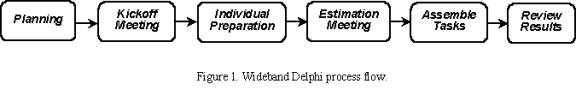
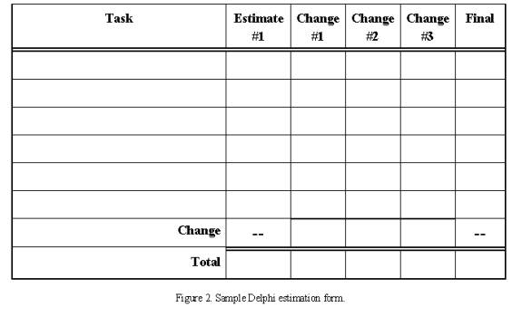
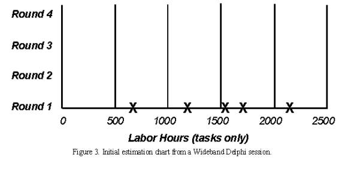
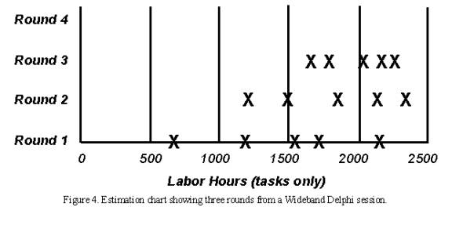

|
Добавлено в RUP Карлом Вигерсом (Karl Wiegers) (www.processimpact.com) с согласия издания Software Development
Magazine. Дополнительные изменения внесены компанией Rational Software Corporation.
Введение
В этой рекомендации приведено описание методики оценки трудозатрат для разработки программного обеспечения. Методика
Wideband Delphi предусматривает выполнение следующих этапов:
-
Составление группы экспертов и их знакомство с проблемой, которую нужно оценить.
-
Составление каждым экспертом общей оценки трудозатрат. При этом эксперты разбивают проблемы на задачи и
представляют оценку трудозатрат для каждой задачи (участники могут работать анонимно).
-
Совместное обсуждение представленных оценок. Процесс повторяется до тех пор, пока не будет выработана общая точка
зрения.
По сравнению с оценкой, разработанной одним индивидуумом, методика Wideband Delphi предоставляет ряд преимуществ.
Прежде всего, поскольку каждый участник работает над списком задач, в результате составляется полный список задач или
структура работы над основными задачами. Принцип групповой работы исключает необъективность оценки, составленной
фиктивными экспертами, неопытными оценщиками или влиятельными личностями, которые скрывают свои истинные взгляды или
преследуют собственные цели. Обычно люди охотнее работают над проектами, в планировании которых они участвовали. Никто
из участников не знает "правильного" ответа, и составление нескольких оценок лучше отражает реальное положение вещей. И
наконец, участники методики Delphi признают пользу итераций в работе над сложными задачами.
Применение методики Wideband Delphi
Методика Wideband Delphi позволяет оценить количество чего угодно, например, число трудодней, необходимых для
реализации отдельной подсистемы, количество строк кода или количество классов во всем продукте, количество литров
краски, необходимой для ремонта дома Билла Гейтса, или объем трудозатрат, требующихся конкретной организации для
достижения второго уровня модели зрелости процессов.
Методика Delphi позволяет разрабатывать подробную структуру работы, которая составляет основу восходящего распределения
трудозатрат и планирования или редактирования оценки. Работу с методикой Delphi следует начать с документа Видение, с
более подробной спецификации требований к оцениваемой проблеме, с описания начальной архитектуры высшего уровня или с
плана проекта. Результатом сессии Delphi становится подробный список задач проекта; список критериев качества,
процессуальных и сопутствующих задач; список предположений; список задач и общих оценок проекта, по одному экземпляру
от каждого участника сессии.
На рисунке 1 изображен ход сессии Wideband Delphi. На этапе планирования выбирается проблема для оценки и составляется
группа участников. На начальном собрании эксперты знакомятся с проблемой. Затем каждый участник самостоятельно
составляет начальный список задач и разрабатывает свои оценки. На оценочном собрании проводится обсуждение этих
материалов и в несколько повторяющихся этапов вырабатывается общий список задач и оценок. Затем ведущий или
руководитель проекта объединяет результаты оценки и публикует их для просмотра участниками проекта. Если установленные
выходные критерии удовлетворены, сессия завершается. Полученный в результате диапазон оценок гораздо лучше отражает
реальное положение вещей, чем любая единичная оценка. Ниже приведено описание этапов сессии.

На этапе планирования сессии Wideband Delphi необходимо очертить проблему и выбрать участников. На начальном
собрании эксперты знакомятся с проблемой. Затем каждый участник самостоятельно составляет начальный список задач и
разрабатывает свои оценки. Во время оценочного собрания проводится несколько циклов оценки и составляется полный список
задач и проработанных оценок для каждой задачи. Затем собранная информация объединяется, публикуется для внутреннего
использования, и с ней знакомятся участники проекта. Если выходные критерии удовлетворены, сессия завершается.
Планирование
На этапе планирования сессии Wideband Delphi происходит определение проблемы и устанавливаются ее рамки. Определяются
следующие элементы: видение, модель варианта использования, существующая система и предварительная архитектура. Крупные
проблемы можно разбить на несколько частей, для которых можно дать более точную оценку. При необходимости для оценки
каждой части можно создать отдельную группу экспертов. Инициатор сессии готовит описание проблемы, на которое участники
будут опираться при составлении оценок. Это описание должно содержать достаточно данных, чтобы эксперты могли вынести
реальные и обоснованные оценки.
В процессе оценки участвуют ведущий, который планирует сессию и руководит ее выполнением, руководитель проекта и от
двух до четырех экспертов. Ведущий должен обладать достаточной информацией для проведения оценки наравне с экспертами.
Однако он должен выступать как независимый руководитель сессии и не вправе искажать ее результаты в соответствии со
своими представлениями. Для участия в сессии выбираются люди, наиболее глубоко понимающие проблему или проект и
обладающие информацией для проведения оценки.
Начальное собрание
На начальном собрании, которое длится до одного часа, участники знакомятся с проблемой. Ведущий излагает принципы
методики Wideband Delphi тем участникам, которые с ней незнакомы, а также детали проблемы, предварительные наработки и
особенности проекта. Ведущий должен дать участникам как можно больше сведений для проведения наиболее точной оценки.
Однако при этом он должен стараться преподносить непредвзятую информацию, чтобы не повлиять на мнение экспертов.
Участники просматривают цели оценки и обсуждают проблему и сопутствующие вопросы. Участники также согласовывают единицы
измерения, например, недели, человеко-часы, доллары или строки кода. Если ведущий придет к выводу, что все члены группы
обладают достаточной информацией для проведения оценки, сессия переходит к следующему этапу. В противном случае
необходимо более глубоко ознакомить участников с проблемой или заменить некоторых из них на более осведомленных.
Для того чтобы определить, готовы ли вы перейти к следующему этапу сессии Wideband Delphi, проверьте выполнение входных
критериев, то есть обязательных условий. Прежде чем перейти к оценочному этапу убедитесь, что выполнены следующие
условия:
-
Составлен окончательный список участников.
-
Проведено начальное собрание.
-
Участники согласовали цель оценки и единицы измерения.
-
Руководитель проекта может участвовать в сессии.
-
Эксперты обладают достаточной информацией для вынесения максимально точной оценки.
Предварительная индивидуальная работа
Предположим, что нужно оценить общий объем трудозатрат (обычно измеряемый в человеко-часах) для выполнения
определенного проекта. Сначала каждый участник самостоятельно, с помощью формы, показанной на рисунке 2, разрабатывает
начальный список задач, которые нужно выполнить для достижения цели проекта. Затем указывает предполагаемый объем
трудозатрат для выполнения каждой задачи. Разбейте каждую задачу на несколько небольших задач, для которых можно дать
более точную оценку. Четко излагайте суть задачи, потому что списки задач каждого участника будут объединены в один
составной список. Сложите вместе значения оценок каждой задачи в согласованных единицах измерения. В результате вы
получите начальную общую оценку.

В начале процесса оценки каждый участник самостоятельно разрабатывает начальный список задач, которые необходимо
выполнить для достижения цели проекта, и заполняет форму.
При составлении оценки не ориентируйтесь на то, что руководитель проекта или другие заинтересованные лица хотели бы
услышать. Вполне возможно, что результаты вашей оценки выйдут за рамки плана проекта, будут превышать предполагаемые
трудозатраты или расходы. Вам потребуется обосновать свою оценку, которая может повлечь за собой сужение рамок проекта,
увеличение его продолжительности или пересмотр ресурсов. Однако постарайтесь не поддаваться внешнему влиянию и
реализуйте ваше истинное представление о проекте.
Помимо составления списка задач проекта отдельно запишите сопутствующие и связанные задачи. В первом цикле не забудьте
указать задачи, связанные с управлением и организационными вопросами. К задачам по тестированию и проверке обязательно
добавьте задачи по доработке. Доработка с большой вероятностью потребуется для устранения неисправностей, и ее
необходимо запланировать. Если вы оцениваете план проекта, обдумайте также задачи, напрямую не связанные с проектом, но
которые необходимо включить в список. Сюда относятся собрания, отпуска, обучение и другие сопутствующие события, на
которые уходит значительная часть времени.
Записывайте все предположения, которые вы делаете при составлении оценки, потому что разные предположения об одном и
том же предмете могут привести к значительным расхождениям в общих оценках. Например, если вы предполагаете, что
библиотека компонентов будет куплена или будет использоваться библиотека из предыдущего проекта, запишите это. Другой
эксперт может исходить из того, что такая библиотека будет разработана в процессе проекта. В результате ваши общие
оценки будут отличаться.
При составлении оценки придерживайтесь следующих рекомендаций:
-
Исходите из того, что все задачи будет выполнять один человек (вы).
-
Исходите из того, что все задачи будут выполняться по порядку. На этом этапе можете не задумываться о конкретной
последовательности их выполнения.
-
Исходите из того, что вы будете выполнять задачи непрерывно. Конечно, это далеко от реальности, но упрощает процесс
оценки.
-
Если в качестве единиц измерения вы используете календарное время, укажите все предполагаемые периоды ожидания
между задачами. Позже это пригодится для перевода оценок трудозатрат в оценки планирования.
Оценочное собрание
В начале оценочного собрания ведущий собирает оценки, составленные каждым экспертом, и составляет таблицу, как показано
на рисунке 3. Общая оценка каждого участника представлена в виде X в строке "Цикл 1". Каждый эксперт видит, какое место
занимает его начальная оценка в общем списке. Диапазон значений начальных оценок может быть очень велик. Представьте,
насколько разные мнения у экспертов, и насколько разным могло бы быть выполнение проекта, если бы для планирования был
привлечен только один эксперт.

В начале оценочного собрания ведущий собирает оценки, составленные каждым экспертом, и вносит их в таблицу. Общая
оценка каждого участника представлена в виде X в строке "Цикл 1". Диапазон значений начальных оценок может быть очень
велик.
В некоторых случаях ведущий не оглашает авторов той или иной оценки, если считает, что анонимность сыграет
положительную роль в данной сессии Delphi. Анонимность может помочь, если среди участников есть прямолинейные коллеги,
которые могут подавить мнения других участников. Анонимность также позволяет избежать ситуации, когда участники
уступают мнению более уважаемого эксперта, если их собственные оценки отличаются от его выводов. Применение анонимного
метода необязательно.
Каждый участник зачитывает свой начальный список задач, перечисляет все предположения и задает вопросы. При этом он не
говорит, какая из оценок принадлежит ему. Списки задач, составленных разными экспертами, будут отличаться друг от
друга. Объединение этих списков позволит создать гораздо более полный список задач, чем список, созданный только одним
экспертом. Объединенный список будет содержать несколько десятков задач. Если в вашем списке больше задач, возможно,
они слишком мелкие. При необходимости разделите проблему на несколько менее крупных проблем и проведите оценку для
каждой из них отдельно.
Во время начального обсуждения эксперты также высказывают свои предположения, замечания об оценке и задают свои вопросы
о проблеме. В результате участники придут к обсуждению общего набора предположений и общего списка задач. Сохраните
этот список и используйте его в качестве отправной точки для оценки подобного проекта.
По окончании начального обсуждения все участники одновременно (не обсуждая друг с другом) вносят изменения в свои
оценки. Они пересматривают свои списки задач на основе сведений, полученных в ходе обсуждения, и редактируют оценки с
учетом нового понимания задач и основываясь на новых предположениях. Эксперты могут добавлять в формы новые задачи и
вносить любые изменения в свои начальные оценки. У каждого участника суммарное значение изменений для всех задач должно
быть равно значению изменения общей оценки проекта.
Ведущий собирает новые версии общих оценок и вносит их в ту же таблицу, в строку "Цикл 2". Для наглядности я заполнил
эту таблицу на доске. На рисунке 4 видно, что во втором цикле диапазон значений оценок сократился, и их среднее
значение больше, чем среднее значение из цикла 1. С каждым последующим циклом диапазон значений будет сокращаться.
Повторять процедуру пересмотра списков задач, обсуждения предположений и вопросов, а также редактирования оценок
следует до тех пор, пока не будут выполнены следующие условия:
-
проведено четыре цикла
-
диапазон оценок сократился до приемлемого значения (установленного заранее)
-
истекло запланированное время собрания (обычно два часа)
-
никто из участников не хочет менять свои последние оценки

После обсуждения начальных оценок все участники редактируют свои оценки. Ведущий собирает новые версии общих оценок
и вносит их в ту же таблицу, в строку "Цикл 2". При каждом следующем цикле диапазон значений оценок может сокращаться,
и их среднее значение будет больше, чем среднее значение из цикла 1.
Ведущий следит за тем, чтобы обсуждение не затягивалось, и отводит на каждый цикл определенное время, от 15 до 20
минут. Ведущий должен соблюдать общие правила проведения собраний, например, начинать и заканчивать собрание во время,
поощрять участников к совместной работе и создавать атмосферу для объективного и непредвзятого обмена информацией.
Иногда в первых циклах эксперты пользуются анонимным методом, но затем оказываются от этой идеи и продолжают работу,
открыто излагая свое мнение. Это дает возможность обсуждать задачи, оценки по которым значительно отличаются. Если
анонимность сохраняется, ведущий не должен называть имена авторов окончательных оценок вплоть до завершения сессии.
Объединение задач
После окончания оценочного собрания работа еще не завершена. Ведущий или руководитель проекта объединяет задачи и их
оценки в один главный список задач. Он также объединяет списки предположений, задачи, связанные с качеством,
процессуальные и сопутствующие задачи, а также оценки времени ожидания.
В процессе объединения необходимо удалить повторяющиеся задачи и установить для каждой задачи разумную величину оценки
на основе имеющихся оценок. "Разумная" не означает, что нужно оценки экспертов заменить на те, которые руководитель
проекта считает правильными. Большая разница оценок на первый взгляд одинаковых задач может означать, что эксперты
трактовали эти задачи по-разному. Например, двое участников указали задачу "реализовать класс". Однако один из них имел
в виду тестирование модуля и проверку кода, а другой - только создание кода. Каждый участник должен очень четко
формулировать название задачи, чтобы свести к минимуму неточности при составлении главного списка задач. На этапе
объединения необходимо сохранять диапазон оценок для каждой задачи, однако если значение оценки одного из экспертов
значительно отличается от остальных, возможно, стоит его изменить или не принимать во внимание.
Просмотр результатов
На завершающем этапе все участники просматривают итоговые результаты и утверждают их окончательный вариант.
Руководитель проекта раздает участникам полный список задач с оценками для каждой из них, общими оценками, списком
предположений и другой информацией. Затем он организует собрание на 30-60 минут для утверждения общей оценки. Тогда же
участники могут высказать свое мнение об организации сессии Wideband Delphi и предложить варианты ее улучшения.
Участники должны убедиться, что окончательный список задач составлен как можно более полно. Возможно, они нашли еще
несколько задач, которые не были указаны на оценочном собрании. Сейчас эти задачи можно добавить к общему списку.
Убедитесь, что вы уделили должное внимание объединению задач, оценки для которых значительно отличались. Конечная цель
- создать диапазон оценки, максимально приближенный к реальности, на который руководитель проекта и другие
заинтересованные лица будут опираться при планировании и выполнении проекта.
Завершение процесса оценки
Процесс оценки завершен успешно, если выполнены заданные выходные критерии, после чего можно перейти к выполнению
других задач. Обычные выходные критерии Wideband Delphi следующие:
Составлен общий список задач.
Составлен общий список предположений.
Участники согласовали окончательные диапазоны оценок для каждой задачи, составленные на основе их собственных оценок.
Теперь нужно решить, как поступить с этими данными. Можно просто вывести среднее значение из окончательных оценок и
получить конкретные значения, которые, вероятно, ожидает заказчик. Однако среднее значение может оказаться слишком
низким, поэтому есть смысл оставить оценки в виде диапазона значений. Оценки прогнозируют будущее положение вещей, и
диапазон отражает неотъемлемую долю неопределенности такого прогноза. Можно указать три значения: среднее (если все
идет по плану), минимальное (самый оптимистичный прогноз) и максимальное (самый пессимистичный прогноз). Или можно
представить среднее значение как номинальный ожидаемый результат, плюс разница между максимальным и средним значением и
минус разница между средним и минимальным значением.
Каждая оценка может оправдаться с определенной степенью вероятности, поэтому набор оценок формирует распределение
вероятностей. В главе 6 книги A Discipline for Software Engineering (Addison-Wesley, 1995) Уоттс Хамфри (Watts
Humphrey) описывает математически точный способ объединения множества оценок и их неопределенностей для вычисления
общей оценки с верхним и нижним вероятными интервалами. Другой сложный способ - применить метод Монте-Карло и вычислить
распределение вероятностей возможных результатов оценки на основе окончательных значений оценок.
Возможно, результаты сессии Delphi не будут отвечать ожиданиям заказчиков, однако заказчики могут решать, составлять ли
план проекта, приближенный к реальности на 10 процентов, на 90 процентов или где-то по середине. Для повышения точности
будущих оценок обязательно сравните реальные результаты, полученные после выполнения проекта, с вашими предварительными
оценками.
Повторение (итерация)
Преимущество этой методики в том, что после первой, достаточно приблизительной оценки, проведенной на начальном этапе
жизненного цикла, ее результаты можно редактировать на каждом следующем этапе, и даже при каждой итерации. Процесс
можно ускорить, если есть возможность собрать ту же группу экспертов и начать процедуру пересмотра оценок с момента, на
котором был завершен последний цикл. В каждый очередной раз известно больше информации о проекте, изменились некоторые
предположения, лучше проработана архитектура. Эти сведения помогают при распределении трудозатрат.
Новая оценка может иметь более узкий диапазон, но он не обязательно будет пересекаться с диапазоном, полученным при
предыдущей оценке, он может быть выше или ниже. Если новый диапазон выше, чем предыдущий, - это сигнал руководителю
проекта, что существуют определенные риски, которые нужно немедленно проработать.
Преимущества методики Wideband Delphi
Ни один метод оценки не является идеальным. Если бы идеальный метод существовал, он бы назывался предсказанием, а не
оценкой. Однако методика Wideband Delphi основана на нескольких надежных принципах оценки. Принцип групповой работы
позволяет учитывать мнения сразу нескольких экспертов. Полученный диапазон оценок отражает долю неопределенности,
которая присуща любой оценке.
Методика Wideband Delphi занимает время и требует присутствия опытных экспертов, однако позволяет составить объективную
оценку и избежать крайних значений.
|